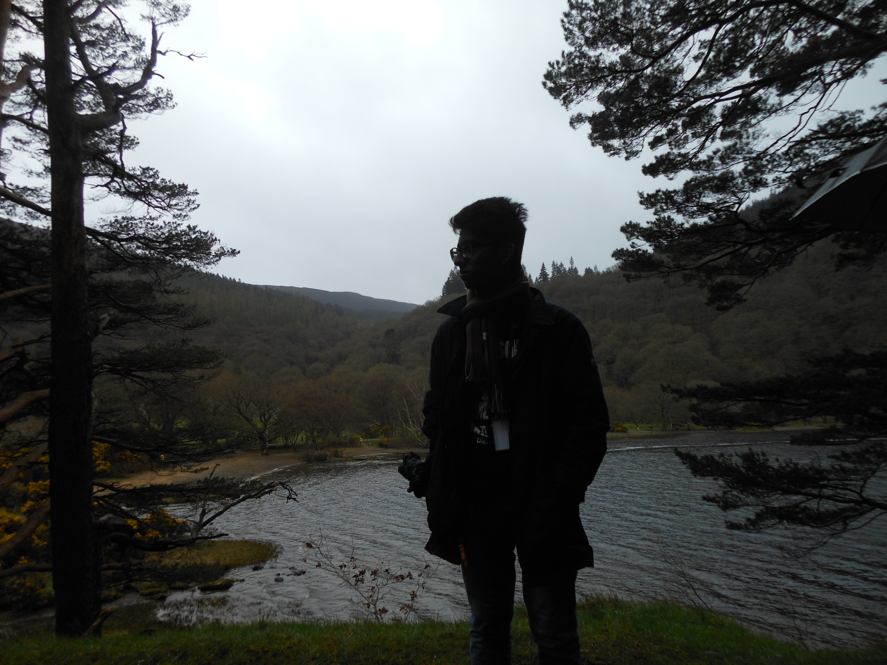

Akhil

About me
Hi! I am Akhil
I was born in 2003 in a small town called Madurai, near the capital of the Tamilnadu, Chennai.
I'm 18 now, and I'm currently pursuing my B.tech in computer science from IIT Goa.
My hobbies include drawing, watching documentaries, and reading.
Education
| Year of graduation | Degree | institution |
| 2025 | B.Tech CSE | IIT Goa |
| 2021 | 12th graduation | FIITJEE Hyderabad |
| 2019 | 10th graduation | FIITJEE Hyderabad |
1st year courses @ IIT Goa
Autumn 2021-2022
- MTH101:Calculus by Dr.Abhitosh Pandey, Dr.Sandipan De
- PH101:Quantum physics and application by Dr.Santosh Kumar Das, Dr.Sudipta Kanungo
- CS101:Introduction to computing by Dr.Clint P. George
- CH102:Inorganic chemistry byDr.Rishikesh Narayan
- CH101:Organic chemistry byDr. E. Siva S. Iyer
- Ch104:Chemistry lab by Dr. E. Siva S. Iyer
- CS100:Introduction to profession by Prof. Venkatesh Kamat
Spring 2021-2022
- MTH1021:Basic linear algebra by Dr.Kalpesh Haria Link:https://classroom.google.com/u/0/c/NDgzOTM2ODM5OTAy
- PH102:Electricity and magnetism by Dr.Vaibhav Wasnik Link:https://classroom.google.com/u/0/c/NDgzNTcyNjI1MzU0
- CS102:Software tools by Dr.Clint P. George Link:https://clintpgeorge.github.io/cs-102/spring-2022/git/
Extracuricullar activities, awards, hobbies,etc.
- Was a competitive swimmer from grades 4 to 8.
- I can do cool tricks with a pen or pencil.
- I like art a lot.